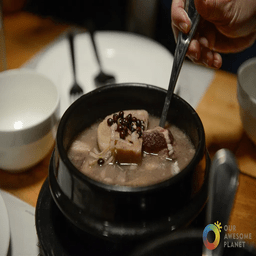
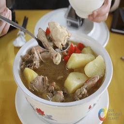

The Art of Food in Iloilo City
La Paz Batchoy, an iconic dish hailing from Iloilo City, stands as a culinary masterpiece that encapsulates the rich and savory flavors of Ilonggo cuisine. Originating in the La Paz district, this noodle soup has become a cultural symbol and a source of pride for locals. The dish features a harmonious blend of thin rice noodles, pork offal, and chicharrón immersed in a flavorful pork broth, creating a satisfying and aromatic culinary experience. You could try this local dish at Ted's Old Timer La Paz Batchoy. It is a well-chain in Iloilo that serves authentic La Paz Batchoy. They have several branches across the city.
That's not all; Iloilo's culinary scene extends beyond its famed La Paz Batchoy, offering a diverse and flavorful array of dishes that reflect the region's gastronomic excellence. The province takes pride in its unique blend of influences, combining indigenous flavors with Spanish, Chinese, and Malay influences. From the savory and hearty Kadyos, Baboy, at Langka (pigeon pea soup with pork and jackfruit) to the mouthwatering Pancit Molo (dumpling soup), Iloilo's food landscape is a testament to its rich cultural heritage. Exploring the local markets and eateries in Iloilo is a culinary adventure that unveils the depth and variety of Filipino cuisine.
Baye-Baye, a traditional Ilonggo kakanin, is crafted from a blend of glutinous rice, coconut milk, and sugar, creating a delightful rice cake with a chewy texture. Encased in banana leaves, this sweet treat exudes a subtle, earthy aroma that enhances its overall sensory appeal. Reserved for special occasions, Baye-Baye serves as a symbol of Ilonggo culture, offering a sweet indulgence that reflects the richness of Filipino culinary heritage. Unwrapping the banana leaves reveals not just a dessert but a cherished piece of tradition, embodying the essence of community and celebration in Iloilo.
Pancit Molo is a Filipino dumpling soup originating from Molo, Iloilo. This comforting dish features small, meat-filled dumplings made with a mixture of ground pork and minced shrimp, wrapped in thin wanton wrappers. The dumplings are then cooked in a rich and flavorful broth made from chicken, pork bones, and sometimes shredded chicken meat. Pancit Molo is often garnished with green onions, fried garlic, and sometimes a dash of calamansi for added citrusy brightness, making it a popular and heartwarming noodle soup in the Philippines.
In essence, Iloilo City is not just a place to eat; it is a culinary journey that immerses visitors in the rich tapestry of flavors, textures, and stories that define the region. Whether indulging in time-honored classics or savoring the latest culinary innovations, each bite in Iloilo is a celebration of the city's passion for food and its commitment to preserving and evolving its culinary heritage. For food enthusiasts, Iloilo City is a destination where every meal is an invitation to explore, discover, and relish the extraordinary world of Ilonggo cuisine.
 